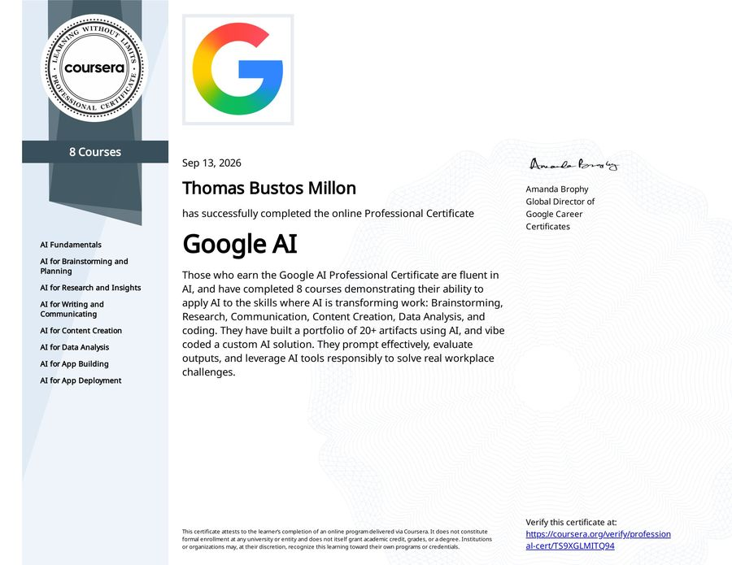
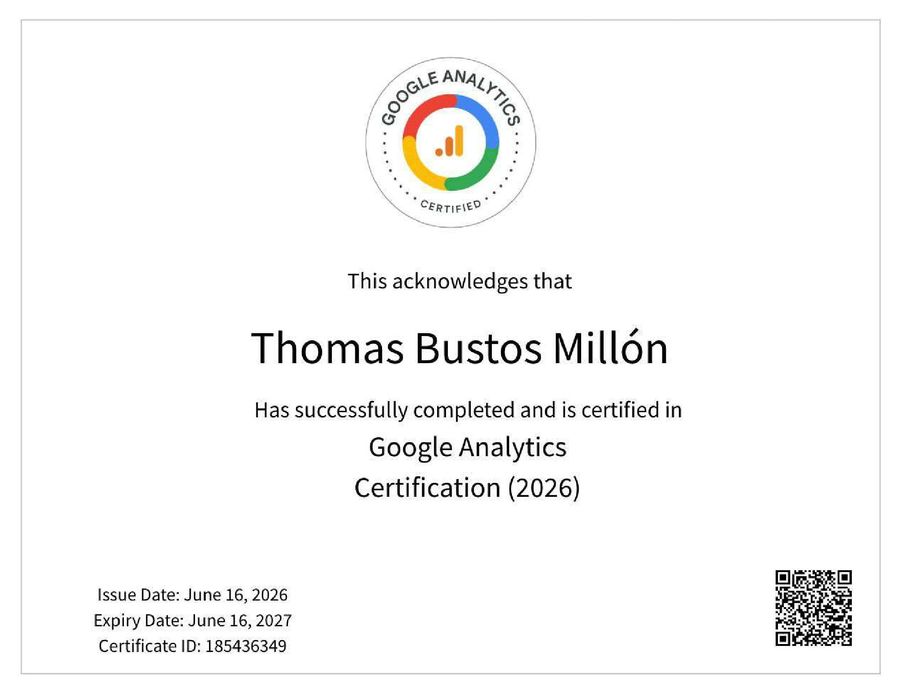
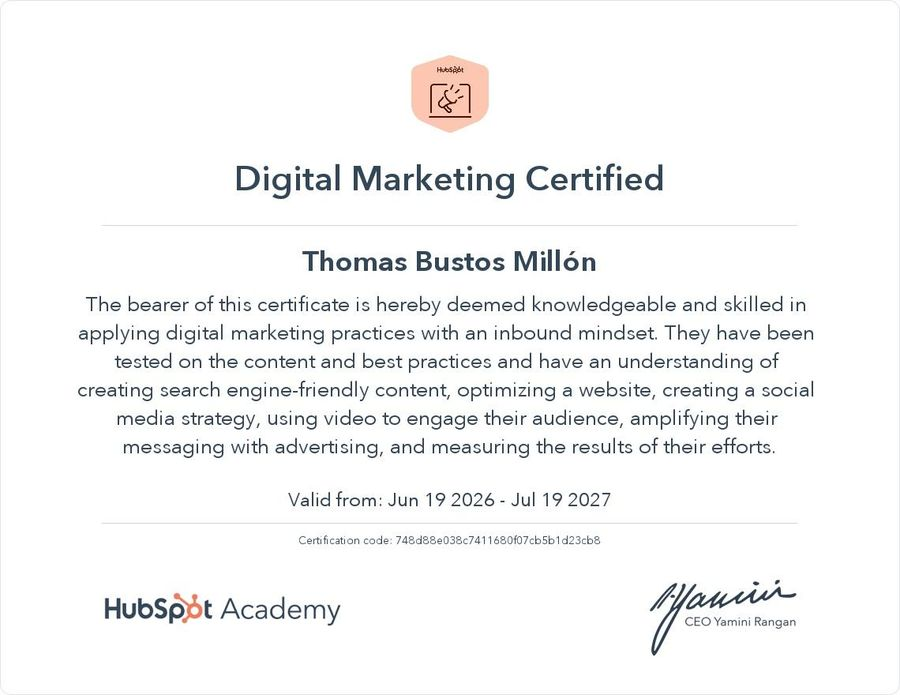
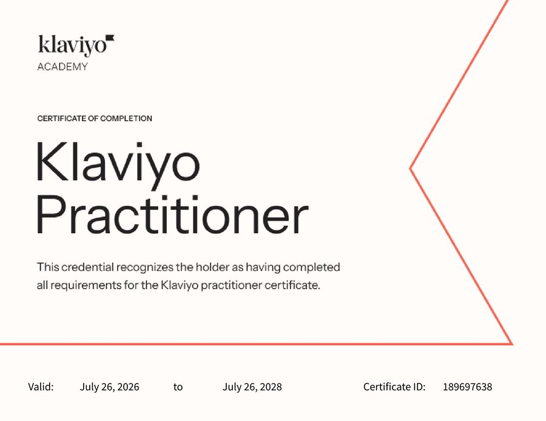
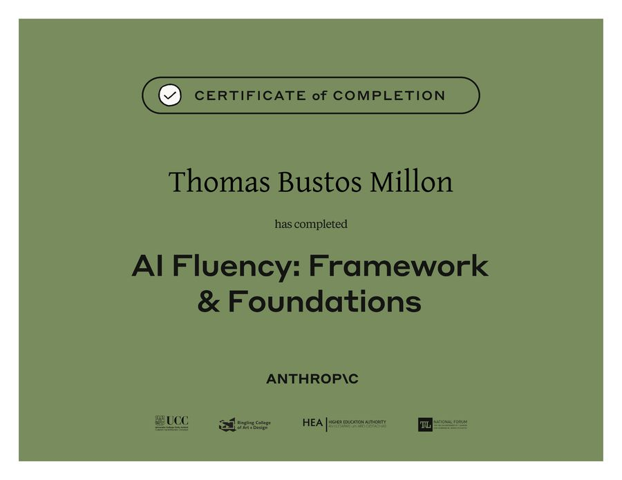
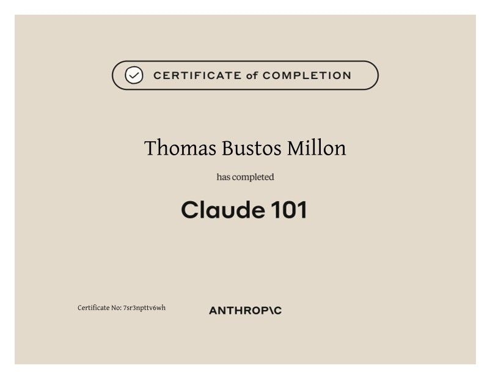

Resume
Thomas Bustos Millon, Digital Marketing & CRM Specialist
Marketing specialist who builds things and measures them. Currently the marketing consultant for Mundrabilla Roadhouse in WA, covering social media, local search, the website and reporting. Based in Perth with full Australian working rights.
Experience
Marketing Consultant, Mundrabilla Roadhouse
May 2026 to present. Part time, remote from Perth.
- Relaunched Facebook and Instagram after five quiet months and tested which content travellers respond to. Case study
- Report performance to the owner from GA4, Search Console, Google Business Profile and Meta Business Suite. Case study
- Manage local search and listings on Google Business Profile, WikiCamps, CamperMate and Hipcamp.
- Maintain the WordPress site: optimised existing pages for search and created three new ones.
- Built the roster tool the roadhouse uses each week. Case study
Work and travel across regional Australia
September 2023 to April 2026
Seven industries in four states, from cotton irrigation in Queensland to a season on site at Mundrabilla Roadhouse in 2025. It is how I know the customers I now market to.
Marketing Analyst, Córdoba Acelera
April to August 2023, Argentina
- Email testing, social media across four platforms and three trade shows for a public-private innovation agency. Details
University Lecturer, Marketing I, Universidad Siglo 21
March to July 2023, Argentina
- Taught 150+ students in person and online, with a 96% pass rate.
Retail Execution Supervisor, Trade Marketing, Molinos Río de la Plata
January 2022 to March 2023, Argentina
- Led a field team of 20 across 35 retail sites with 100% team retention. Details
CRM & Lifecycle Marketing Specialist, Gett Argentina
June to October 2020. Promoted from Commercial Management Assistant, January to June 2020.
- Only marketer in a 15-person mystery shopping business. Built the CRM in HubSpot, the paid acquisition and the journey that turned leads into active mystery shoppers. Details
Earlier research roles
2016 to 2019, Argentina
Marketing Analyst intern at Agencia MOVE (2019) and Research Assistant at CENTROFRANCHISING (2016 to 2018): market research, surveys and focus groups.
Tools
Used at work
HubSpot, Mailchimp, Zendesk. Google Analytics 4, Google Search Console, Google Business Profile. Meta Business Suite, Meta Ads Manager, Google Ads, LinkedIn Ads. WordPress, Canva, CapCut. Excel, Google Sheets, Monday.com. Claude.
Certified, not yet used at work
Klaviyo.
Training level
SQL, Python for data analysis, Looker Studio.
Education
- Postgraduate Professional Certificate in Data Science & AI, Acámica, 2021
- Bachelor of Business (Marketing), Universidad Siglo 21, 2016 to 2020
- Seminar in Entrepreneurship and Innovation, University of San Diego School of Business, 2019
- First place, national business strategy simulation, Universidad Siglo 21
Certificates












Languages
Spanish, native. English, professional working proficiency (IELTS).